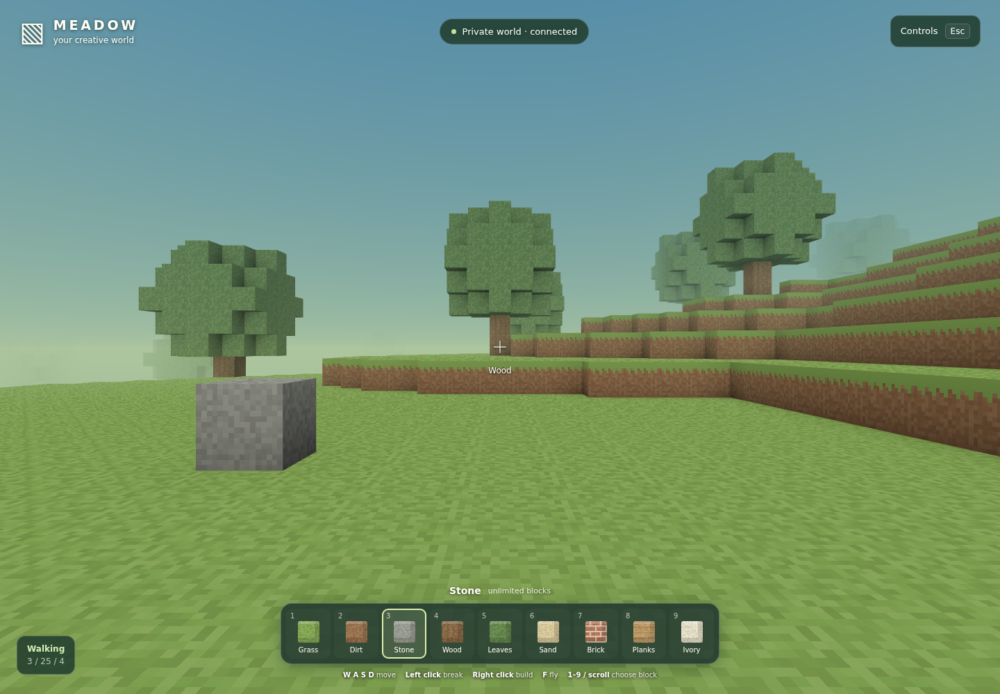

VOXEL WORLD LAB · CREATIVE
Your own
little world.
Walk through the meadow, fly above the trees, and build something that stays. A full-window 3D playground with no enemies or hunger.
Enter MeadowConnect to Tailscale first. Opens the private game in a new tab.

Built with Voxelize · running on my DGX SparkMake room for anything.
Nine unlimited building materials. Break blocks, place them, and fly. World changes save on the DGX, so your builds are there when you come back.
Simple controls.
W A S D move · mouse to look.
Left click breaks; right click builds.
1–9 choose · F fly · Esc pause.
Keyboard and mouse recommended.
A world to learn from.
A separate Voxelize project for future recording, prediction, and planning labs. This first version is the playable environment; model training comes later.